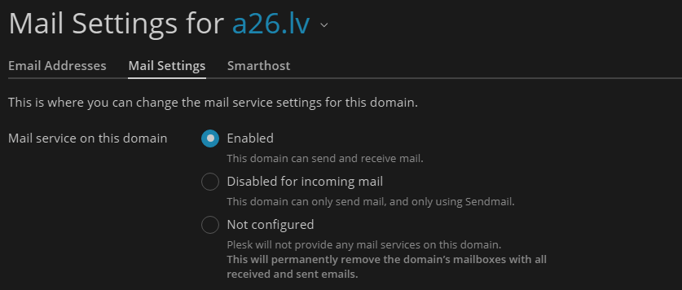

Tīkls
DNS ieraksti - kas jāzina
DNS ir domēna "tālruņu grāmata" - katrs ieraksta veids atbild uz savu jautājumu par domēnu. Zemāk ir tie, kas visbiežāk vajadzīgi, pārvaldot mājaslapu un pastu.
| Ieraksts | Ko dara | Piemērs |
|---|---|---|
A | Domēna IPv4 adrese - uz kuru serveri iet mājaslapa. | a26.lv → 91.203.x.x |
AAAA | Tas pats, kas A, bet IPv6 adresei. | a26.lv → 2a01:... |
CNAME | Aizstāj vienu vārdu ar citu (alias) - pats nesatur IP. | www.a26.lv → a26.lv |
MX | Kurš serveris apstrādā ienākošo e-pastu šim domēnam. Skaitlis = prioritāte (mazāks = pirmais mēģinājums). | 10 mail.a26.lv |
TXT (SPF) | Saraksts serveru, kuriem atļauts sūtīt pastu šī domēna vārdā. Saņēmēja serveris to pārbauda, lai atpazītu viltotu sūtītāju. | v=spf1 include:_spf.google.com ~all |
TXT (DKIM) | Digitāls paraksts katrai izejošai vēstulei - apliecina, ka saturs nav mainīts ceļā uz saņēmēju. | selector._domainkey |
TXT (DMARC) | Politika, ko darīt, ja SPF vai DKIM pārbaude neizdodas - noraidīt, karantīnā vai neko. | v=DMARC1; p=quarantine |
A ieraksts un MX ieraksts ir pilnīgi neatkarīgi viens no otra - mājaslapa un pasts drīkst dzīvot uz pavisam dažādiem serveriem. Tieši tāpēc iespējams paturēt mājaslapu vienā hostingā, bet pastu pārcelt uz citu (sk. zemāk).
Delegācija - kā DNS ķēde strādā
Delegācija ir ieraksts .lv reģistrā (NIC), kas norāda, kuri nameserveri atbild par domēnu. DNS strādā kā ķēde - katrs solis jautā nākamajam:
Kad rēķins nav apmaksāts, NIC izņem tikai deleģēšanas soli - domēns joprojām pieder klientam, WHOIS Nserver laukā redzams -. Pēc apmaksas delegācija atjaunojas un ķēde atkal strādā visiem.
Komandas - kā praktiski pārbaudīt
| Komanda | Ko parāda |
|---|---|
nslookup domēns.lv | Domēna IP adrese (A ieraksts) - kur atrodas mājaslapa. |
nslookup -type=mx domēns.lv | Pasta serveris (MX) - kur atrodas pastkaste. |
nslookup -type=ns domēns.lv | Nameserveri - kur pārvaldīta DNS zona. |
nslookup -type=txt domēns.lv | Visi TXT ieraksti - starp tiem SPF, DKIM, DMARC. |
nslookup mail.domēns.lv | Konkrētā pasta servera (no MX ieraksta) IP adrese. |
Vai hosting un pastkaste ir turpat (uz viena servera)? Salīdzini nslookup domēns.lv (mājaslapas IP) ar nslookup mail.domēns.lv vai citu MX ierakstā redzamo servera nosaukumu izšķirtu uz IP - ja abi sakrīt (vai ir tajā pašā apakštīklā), hosting un pasts dzīvo kopā. Ja atšķiras, pasts ir citur (ārējs pakalpojums).
Plesk Mail Settings - kad ļaut citam hostingam pārņemt pastu
Plesk panelī Mail → Mail Settings katram domēnam ir trīs izvēles, kas nosaka, vai Plesk pats apkalpo e-pastu šim domēnam:

Enabled
Noklusējums. Domēns sūta un saņem pastu tieši caur šo Plesk serveri - pastkastes, e-pasta adreses un viss cits pārvaldīts šeit.
Disabled for incoming mail
Domēns var tikai sūtīt pastu (caur Sendmail, piem. WordPress paziņojumus) - ienākošo pastu Plesk vairs neapstrādā. Noder, ja pastu jau saņem citur, bet lapai joprojām vajag wp_mail()/mail() darboties.
Not configured
Plesk pilnībā pārstāj sniegt pasta pakalpojumus šim domēnam - šī ir opcija, kas ļauj citam hostingam/e-pasta pakalpojumam (Google Workspace, cits serveris u.tml.) pārņemt pastkastes, jo Plesk vairs "necīnās" par to pastu.
Not configured pastāvīgi izdzēš visas šī domēna pastkastes ar visiem saņemtajiem un nosūtītajiem e-pastiem (Plesk to pats raksta zem opcijas). Pirms izvēles - izveido pastkastu dublējumu, ja saturs vēl vajadzīgs.
Migrācijas gadījumi - kas man jādara, solis pa solim
A) Tikai pasts pāriet citur (hosting paliek pie manis)
DNS zonā tiek nomainīti jaunā pasta pakalpojuma norādītie ieraksti. MX jānorāda uz jaunā pasta pakalpojuma serveriem, un pēc vajadzības jāpievieno/jāmaina arī SPF, DKIM, DMARC u.c. ieraksti. Mājaslapas A/AAAA ieraksti paliek nemainīti.
Plesk: pārslēdz uz Disabled for incoming mail (ne uzreiz Not configured). Kamēr pasta serviss paliek Enabled, Plesk domēnu apkalpo kā lokālu pasta domēnu un var mēģināt piegādāt pastu lokālajām pastkastēm, pat ja MX jau norāda uz jauno pasta serveri.
Disabled for incoming mail neizdzēš vecās pastkastes un tajās esošās vēstules - tas tikai atslēdz Plesk ienākošā pasta apstrādi.
Ja vecās vēstules jāpārceļ, tās var importēt caur IMAP. Ja jaunajam pasta pakalpojuma sniedzējam tiek nodrošināta piekļuve vecajām pastkastēm, viņi migrāciju var veikt paši.
Kad vecās pastkastes vairs nav vajadzīgas, var pāriet uz Not configured, kas neatgriezeniski izdzēš Plesk pastkastes un tajās esošos e-pastus.
WordPress SMTP konfigurācijā jāizmanto jaunā pasta pakalpojuma SMTP serveris, ports un autentifikācijas dati. Ja WordPress turpina sūtīt caur veco Plesk serveri, jānodrošina, ka tā sūtīšanas serveris ir atļauts SPF ierakstā; pretējā gadījumā SPF pārbaude var neizdoties un tas var ietekmēt piegādi.
B) Viss (hosting un pasts) pāriet prom no manis
Ja grib paturēt veco pastu, to var importēt caur IMAP. Ja jaunajam pasta pakalpojuma sniedzējam tiek nodrošināta piekļuve vecajām pastkastēm, viņi migrāciju var veikt paši.
Kur jāmaina DNS ieraksti, nosaka domēna nameserveri (NS), nevis tas, kur domēns ir reģistrēts. Piemēram, .lv domēnam reģistratūras panelī var būt norādīts, kuri nameserveri ir autoritatīvi. Kamēr tur ir norādīti mani/Plesk nameserveri, DNS zonu pārvaldu es; ja nameserveri tiek nomainīti uz cita hostinga vai Cloudflare nameserveriem, DNS pārvaldība pāriet tur. Pārbaudīt var ar nslookup -type=ns domēns.lv vai WHOIS.
Ja DNS zonu turpinu pārvaldīt es, pirms pārslēgšanas var samazināt DNS ierakstu TTL (piemēram, līdz 300 sekundēm), lai izmaiņas varētu atjaunoties ātrāk. Pēc tam A/AAAA, MX un citus nepieciešamos DNS ierakstus nomaina uz vērtībām, ko iedod jaunais hostings.
Ja nameserveri tiek pārcelti uz jauno hostingu, DNS ierakstus pēc tam pārvalda jaunais DNS pakalpojuma sniedzējs.
WordPress SMTP konfigurācijā jāizmanto jaunā hostinga/pasta pakalpojuma SMTP serveris, ports un autentifikācijas dati. Ja WordPress turpina sūtīt caur veco serveri, tā sūtīšanas serverim jābūt atļautam SPF ierakstā.